China Employee Termination 2026: Pulse Assurance-Checkpoints Brief for Foreign Employers
Key takeaways
- Foreign employers can reduce China termination risk by running fixed assurance checkpoints before each irreversible step.
- The most important checkpoints are legal route fit, local interpretation, evidence integrity, payroll/tax closure, communication control, and archive resilience.
- Checkpoint-based governance is easy to audit and works well across distributed teams.
- City-level interpretation should be treated as a formal checkpoint, not informal background input.
- This brief is impact-first for business readers; legal depth is in the appendix.
What changed and why this matters now
Under hourly operational pressure, teams often confuse activity with readiness. Documents exist, meetings are scheduled, and emails move quickly—but hidden defects remain: route ambiguity, chronology contradictions, unresolved payout mapping, or inconsistent messaging. Assurance checkpoints solve this by forcing explicit “prove then proceed” discipline at each stage.
This run rotates to an assurance-checkpoints format (distinct from recent control-question, rubric, sprint, card, and handbook structures) to maintain variation while improving decision clarity.
Plain-language legal context first
China employer-initiated termination generally requires a lawful statutory basis plus coherent factual and procedural execution. Public legal anchors include the PRC Labor Contract Law framework, implementing regulation references (including Decree No. 535 context), and Supreme People’s Court labor-dispute interpretation materials. For foreign operators, the practical meaning is straightforward: route legality and operational quality must align end-to-end.
Assurance checkpoints operationalize this into binary business decisions: pass, remediate, or hold.
Pulse assurance checkpoints (impact-first)
Checkpoint 1 — Route Assurance
Decision prompt: Is the selected route legally supportable for this fact pattern with a fallback path?
Pass evidence: case-specific route memo + fallback route + owner sign-off.
Hold trigger: generic route rationale or unresolved route assumptions.
Checkpoint 2 — Local Assurance
Decision prompt: Is city-level practical interpretation aligned with route assumptions?
Pass evidence: local memo + open-issue resolution status.
Hold trigger: conflicting local guidance unresolved.
Checkpoint 3 — Evidence Assurance
Decision prompt: Is chronology coherent, source-owned, and contradiction-free?
Pass evidence: reconciled timeline ledger with closure notes.
Hold trigger: material contradiction remains open.
Checkpoint 4 — Payroll Assurance
Decision prompt: Are pay/severance/IIT/social treatment and payment workflow fully ready before communication?
Pass evidence: approved payroll/tax pack + payment-proof plan.
Hold trigger: unresolved payout or tax/social element.
Checkpoint 5 — Communication Assurance
Decision prompt: Is employee-facing communication controlled and aligned with validated facts?
Pass evidence: approved script + briefed spokesperson + deviation protocol.
Hold trigger: unbriefed speaker or script drift risk.
Checkpoint 6 — Closure Assurance
Decision prompt: Can the case be reconstructed quickly under challenge?
Pass evidence: indexed archive + retrieval test pass.
Hold trigger: incomplete index or failed retrieval test.
Checkpoint quick matrix
| Checkpoint | Primary owner | SLA | Downstream blocked if failed |
|---|---|---|---|
| Route assurance | Legal lead | 24h | Yes |
| Local assurance | Local counsel coordinator | 48h | Yes |
| Evidence assurance | HR Ops + Compliance | 24-48h | Yes |
| Payroll assurance | Payroll + Tax | Same day | Yes |
| Communication assurance | HR lead | Same day | Yes |
| Closure assurance | Compliance + Records | 1 business day | Case close |
Why this helps foreign employers
Checkpoint logic gives HQ and local teams a shared operational language. It prevents ambiguous “almost ready” decisions and makes delays explainable to non-local stakeholders using evidence-backed pass/fail outcomes.
Practical scenarios
Scenario 1: Communication pressure before payroll readiness
Business asks to move fast, but final IIT mapping is unresolved.
Checkpoint outcome: Checkpoint 4 fails; communication cannot proceed.
Scenario 2: Strong legal route, weak local confidence
National-level interpretation appears stable, but city-level guidance conflicts.
Checkpoint outcome: Checkpoint 2 fails; route progression paused.
Scenario 3: Late evidence conflict after provisional go
A manager update conflicts with timeline documentation.
Checkpoint outcome: Checkpoint 3 reopens; progression rolls back until reconciled.
Role-owned SOP (checkpoint governance)
Step 1 — Assign checkpoint owners and backups
Owners: HRBP + Legal + Payroll lead
- Map each checkpoint owner, backup, and SLA.
Step 2 — Run checkpoint review before each transition
Owners: checkpoint owners
- Mark pass/fail/open with linked evidence.
Step 3 — Enforce automatic holds
Owners: cross-functional panel
- Block progression on failed critical checkpoints.
Step 4 — Publish assurance status note
Owners: HR + Legal + Payroll
- Record status, blockers, and remediation deadlines.
Step 5 — Run recurrence review
Owners: operations governance + compliance
- Track repeated checkpoint failures and update controls.
Required document checklist
- Employee profile and contract context
- Route rationale memo + fallback route
- City-level interpretation memo
- Chronology/source ledger
- Script package and briefing records
- Payroll/severance/IIT/social worksheet
- Settlement/acknowledgment records
- Payment proof artifacts
- Checkpoint status log
- Closure memo + archive index
Exception handling playbook
- Conflicting functional conclusions: issue evidence-based tie-break memo.
- New fact invalidates a pass: reopen the affected checkpoint immediately.
- Owner unavailable: activate backup owner and preserve SLA.
- Deadline override attempt: document unresolved failed checkpoints and formal risk acceptance.
- Recurring failures in one checkpoint: trigger targeted workflow redesign.
System implementation notes
- Add checkpoint-state fields (pass/fail/open) and evidence links.
- Auto-block downstream workflow on failed critical checkpoints.
- Track KPIs: fail rate by checkpoint, mean time to pass, dispute correlation.
- Keep audit history for state changes.
- Recalibrate checkpoint criteria monthly.
Common mistakes and prevention
- Mistake: treating checkpoints as optional paperwork.
Prevention: mandatory pass before transition.
- Mistake: weak local-practice discipline.
Prevention: hard Checkpoint 2 gate.
- Mistake: payroll closure handled after communication prep.
Prevention: hard Checkpoint 4 no-go rule.
- Mistake: communication ownership unclear.
Prevention: named spokesperson and deviation protocol.
- Mistake: closure artifacts not retrievable.
Prevention: mandatory retrieval test at Checkpoint 6.
What to do now
- Deploy six assurance checkpoints for all active China termination cases.
- Assign owner/backups and SLAs per checkpoint.
- Enforce automatic holds for failed route/evidence/payroll/local checkpoints.
- Run checkpoint review before each major transition.
- Add daily status notes for cross-functional visibility.
- Train managers on communication assurance prerequisites.
- Use checkpoint failure analytics to improve controls.
What to watch next
- City-level shifts may raise local assurance failure rates.
- Case surges may increase payroll assurance bottlenecks.
- Practitioner updates may tighten evidence-assurance expectations.
FAQ
1) Why checkpoints instead of broad SOP language?
Checkpoints convert policy into fast, auditable pass/fail decisions.
2) Can one failed checkpoint block progression?
Yes, especially route, local, evidence, and payroll checkpoints.
3) How often should checkpoints be reviewed?
Before each major transition and immediately after material updates.
4) Who gives final go/hold approval?
Cross-functional HR, legal, and payroll leads.
5) Is city-level interpretation always required?
Yes, because local practice can materially affect route defensibility.
6) What is the top avoidable failure?
Proceeding while payroll or evidence checkpoints remain unresolved.
7) How does this improve over time?
By tracking repeated failed checkpoints and fixing root process gaps.
Legal depth appendix (secondary)
This brief is grounded in official/legal and practitioner materials relevant to employer-side termination operations in China. Core anchors include the PRC Labor Contract Law framework, implementing regulation references associated with Decree No. 535 context, and Supreme People’s Court labor-dispute interpretation materials. Practitioner and payroll-context sources provide practical interpretation for foreign employers. Residual uncertainty remains city- and fact-specific and should be validated with localized professional review for live matters.
Disclaimer
This content is informational only and does not constitute legal, tax, or employment advice.
Sources
- National People’s Congress (Labor Contract Law, English text), accessed 2026-03-06: http://www.npc.gov.cn/zgrdw/englishnpc/Law/2007-12/13/content_1384064.htm
- State Council Gazette reference (implementing regulation / Decree No. 535 context), accessed 2026-03-06: https://www.gov.cn/gongbao/content/2008/content_1124615.htm
- Supreme People’s Court labor dispute interpretation update page, accessed 2026-03-06: https://www.court.gov.cn/fabu/xiangqing/243981.html
- China Briefing, Employee Termination in China, accessed 2026-03-06: https://www.china-briefing.com/news/employee-termination-in-china/
- ICLG Employment & Labour Laws and Regulations: China, accessed 2026-03-06: https://iclg.com/practice-areas/employment-and-labour-laws-and-regulations/china
- Littler ASAP analysis on China employment law developments, accessed 2026-03-06: https://www.littler.com/news-analysis/asap/key-recent-developments-chinas-employment-law-china-us-comparative-perspective
- PwC PRC Individual Income Tax summary, accessed 2026-03-06: https://taxsummaries.pwc.com/peoples-republic-of-china/individual/taxes-on-personal-income
Need local employment support in China?
If you need a compliance-first partner for hiring, payroll, and risk controls in China, China-Payroll.com can help evaluate the right setup.
Image Prompt Pack
Create a 16:9 hero image for article title: 'China Employee Termination 2026: Pulse Assurance-Checkpoints Brief for Foreign Employers'. Scene: global operations team evaluating workforce model options for China market entry. Include motifs: decision matrix, or…